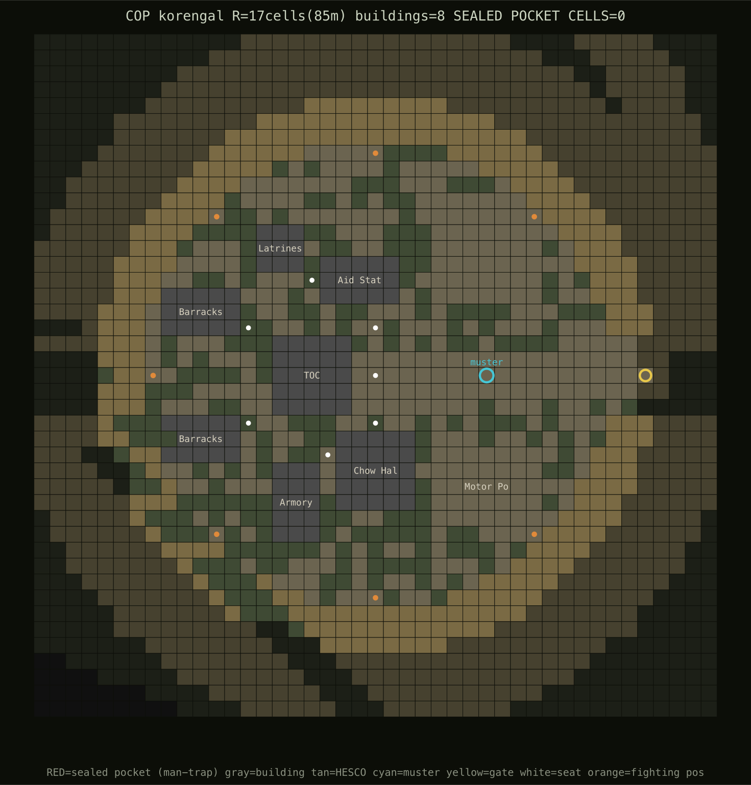
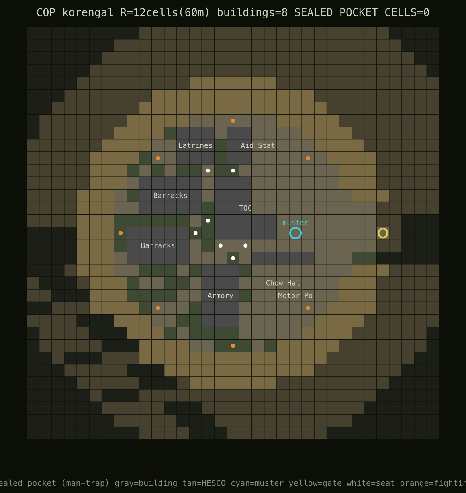
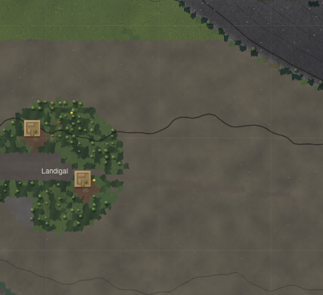
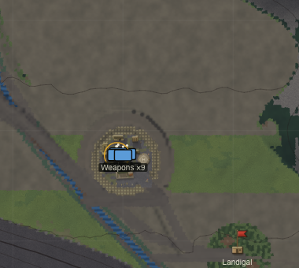

2026·06·07 · World-map scale · the deferred half, shipped
The June 6 audit proved the soldiers were painted 36× too big — a renderer lie over a simulation whose elevations, ridgelines and engagement bands were already authentic. The loud render half (figure size, squad icons) shipped that day; the riskier sim-scale half — the outpost's footprint, the platoon's roster, the valley's gradient, the villages' shape — was deliberately deferred behind the determinism contract. This is that half, built, adversarially verified, and integrated.
Every row is a measured delta on a held-out probe, not a vibe. Bucket 1 (R1/R2) is the audit-day render fix, repeated here for the full picture; the rest is the new work.
| Fix | Doctrinal / real basis | Before → after | Proven by |
|---|---|---|---|
| R1 figure size | a soldier is ~0.6 m top-down; sub-pixel at operational zoom | 36×/12× oversized → 17×/3×; overlap true→false at every zoom | scale-probe |
| R2 squad icon | NATO APP-6: track units, not men | 35 stacked dots → one icon/squad below tactical zoom | scale-probe + live |
| S1 weapons squad | FM/ATP 3-21.8: HQ + 3×9 rifle + 1×9 weapons ≈ 39–42 | weapons sqd 3 → 9; platoon 35 → 41 | roster probe, smoke, balance |
| S2 COP footprint | Restrepo / KOP core ≈ 100–130 m position; Wanat 300×100 m | 170 m circle → 120 m platoon OP; 0 sealed pockets | cop-render, copaudit ×60 |
| S3 floor gradient | the Korengal drains north into the Pech | names/lerp transposed (read "inverted") → honest, drains north, terrain bit-identical | sha256 of elev/land arrays |
| S4 village shape | a village is a cluster of stacked qalats, not one box | 1 compound (~40 m) → 2–6-qalat hamlet (~70–90 m) | extents probe, connectivity ×40 |
| R3 village render | — | one sprite → cluster over the real stamped qalats | live capture |
| R4 LOD bands | dot → squad-icon → figure must be monotonic | pin double-draw + garrison pop → clean handoffs | read-only LOD audit + live |
The model's COP was a clean 170 m circle — a brigade FOB on a valley a real platoon outpost would hold. The fix shrinks the perimeter to a 120 m position (a 60 m wire radius), the scale of Restrepo or the KOP's core. The subtle part: the radius is read in two places — once when siting scores a bench (reserving the footprint + a clearance band from the villages) and once when the wire is actually stamped. They had drifted out of sync (sited for 85 m, built at 60 m). Both now read a single copRadiusCells(), so the reserved footprint and the stamped wire can never disagree again.


A "village" was a single walled box. A real Korengal village — Aliabad, Babiyal — is a cluster of stacked compounds spilling along a terraced bench. villageHamlet(v) now lays out a ring of 2–6 discrete qalats around an open courtyard, the count scaled by population, orchards and terraces filling the benches between them. It is a pure function of the village id — no random draws, no saved state — so the simulation's stamped terrain and the renderer's painted sprites compute the identical hamlet and land pixel-for-pixel on top of each other.

The roster was missing its weapons squad — a 3-man stub where doctrine (FM/ATP 3-21.8) puts a full nine: a weapons-squad leader, two M240 medium-gun teams, ammo bearers, a grenadier and the platoon marksman. Restoring it brings the platoon to 41 (5 HQ + 27 rifle + 9 weapons), squarely in the real 39–42 band. Adding men advances the seeded roster RNG, so soldiers' names and stats shift for a given seed — but rng.fork("platoon") derives that stream without advancing the parent, so the valley itself is untouched.

Weapons ×9 (S1). No floating base-pin floats over the built camp anymore (R4).The fix spec flagged the valley's floor gradient as inverted (floorSouth: 1550 / floorNorth: 2000) and said to swap it. Reading the generator instead of trusting the spec: North is -y (the top of the map), and the generation lerp already placed the low end (1550) at the north mouth. The valley already drained north into the Pech, matching the real Korengal — only the field names and the lerp argument order were transposed, so the code read backwards. Swapping the spec's way would have inverted a correct gradient. The real fix is a compensating double-swap (values and arg order) that leaves the generated terrain byte-identical — proven by a sha256 of the elevation, slope, landcover and river-centerline arrays against the parent commit — with honest names. Code is ground truth; a spec is a hypothesis.
A 7-agent adversarial verification pass — each agent assigned one commit and told to refute it — read every diff, ran copaudit, sha256'd the terrain, and returned zero blockers. But static structural checks can't watch a patrol walk. The dynamic balance harness caught what they missed: on seed bal-6, a squad returning from Loy Kalay froze — a valid 28-cell path, but oscillating between two cells at 2.5 m per 90 seconds. The first hamlet had scattered overlapping compounds whose walls fused into a labyrinth of 1-cell slots; the path planner threaded it, the local steering refused, and the element deadlocked (an issue-010-class trap). The fix made the hamlet a ring of discrete qalats with guaranteed ≥2-cell alleys — wide enough to thread or skirt. Stall count over all 12 deployment seeds: 1 → 0. The lesson: a green static pass is necessary, not sufficient — drive the thing.
The valley is generated from one seeded RNG stream, so reshaping a subsystem — a smaller COP consumes fewer cells, a sparser hamlet fewer draws — ripples everything downstream into a different but statistically equivalent valley. On the fixed probe seeds this shows up as a patrol-march reach of 66→48% and average wounded 4.9→7.5 (killed held flat at ~1.0). An A/B holding the seeds fixed and varying one knob, plus 98% structural village connectivity (203/207 over 40 seeds, vs 99% baseline), confirm this is a reshuffle, not a sealed village or a logic regression. The deliberate restraint, logged: I did not fork dedicated RNGs for the COP and village stamps to zero out the ripple — a larger change to the determinism contract with no correctness payoff once connectivity is preserved.
tsc --noEmit · npm run build · eslint (no new errors) · smoke.ts → SMOKE OK (no-NaN + serialize round-trip) · balance.ts 12×50 → 0 stranded.One radius, two readers. copRadiusCells() is the single source of truth for the wire; siting and building both call it, so they cannot drift. The same discipline that fixed the squad-icon footprint (one figurePx, imported by the combat FX so suppression crescents stay glued to the resized men) — collapse duplicated truth into one function.
One layout, two consumers. villageHamlet(v.id) is a pure, deterministic ring layout. The worldgen stamps terrain from it; the renderer paints sprites from it; neither stores anything. Determinism for free — the hamlet is recomputed identically on every frame and every reload.
Monotonic level-of-detail. As you zoom in, each element hands off cleanly: a base pin retires exactly as the built COP resolves (0.35→0.7), garrison squads crossfade in (0.42→0.62) rather than popping, and a man resolves from a dot to a squad icon to a near-true-footprint figure with no representation drawn twice at once.
Raw record, baselines and probes: docs/progress/2026-06-06-world-scale-realism/ and issue 014-world-map-scale-realism. Commits: e4c28fb (S1) · e8b1ebf (S3) · e460857 (R4) · e365c33 (S2+S4) · 41d22ef (R3) · 8c24bdc (hamlet stall-fix). Built with Claude Opus 4.8.